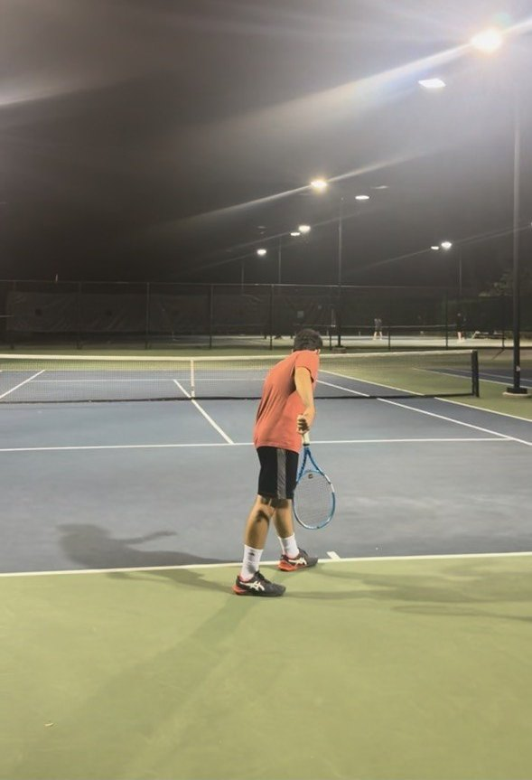

Hobbies
Tennis
I play tennis. Hopefully one day I'll hit a forehand like Nadal's.

Films
I keep track of the films I watch. My four favorites:
Escape Planner (work in progress)
A side project: a trip planner where you describe a trip, ask any AI assistant for destination ideas, and compare the options side by side with maps, budgets and routes.